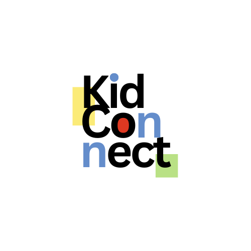

Qui som?
BUG Hunters
- Pol Garcia
- Wassim Ibn Tahar
- Martina Jarque
- Arnau Martin
- Alejandro Poole
- Javier Ocampo
Què és KidConnect?
És una aplicació per connectar famílies amb professionals infantils. Permet reservar serveis de manera fàcil, ràpida i segura, i comunicar-se directament amb els professionals, tot en una sola app.
